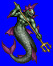
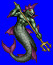
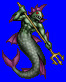
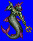

Height: Human height Weight: ???
Habitat: Sea, river Origin: England, Russia
Meaning: ???
There is no direct reference to sahagin in literature. It is thought to have been derived from the "merman" of ancient England. Its description varies from that of a fishlike creature with large fins and long tail that is confined to water to a more humanlike amphibious creature. Its main diet is fish or small animals that dwell near riverbeds, but sometimes it will eat domestic animals or humans if no other food avails itself.